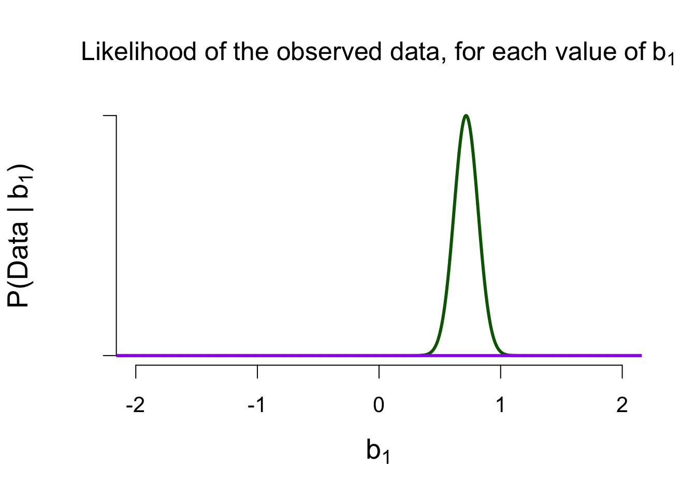
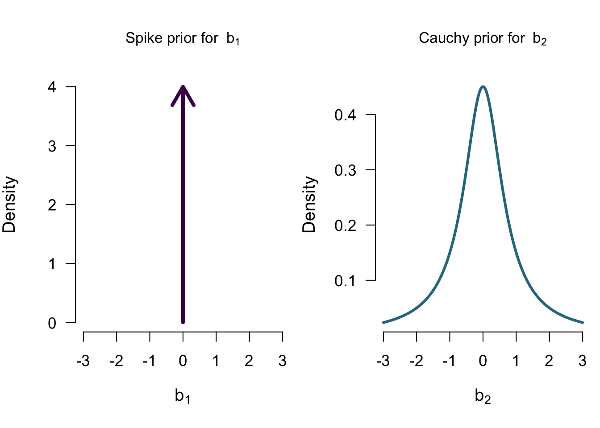

Bayesian ANOVA
ANOVA in regression formula
Show model predictions using dummy variables:
\[ y_i = b_0 + b_1 \times x_i. \] where \(x_i\) indicates whether we are in group A or group B, then \(b_1\) indicates the group difference (if equal to 0, then no group difference)
Two Models (1 predictor with 2 groups)
\[ y_i = b_0 + b_1 \times x_i \]
\[\mathcal{M_0}: b_1 = 0 \] \[\mathcal{M_1}: b_1 \sim Cauchy(0.707)\]
Two Models
\[\mathcal{M_0}: b_1 = 0 \] \[\mathcal{M_1}: b_1 \sim Cauchy(0.707)\]
Model Comparison
How well did each model predict the data?
\(\rightarrow\) Marginal likelihood
Marginal Likelihood of \(\mathcal{M}_1\)

Marginal Likelihood of \(\mathcal{M}_0\)

Ratio of Marginal Likelihoods = Bayes Factor
\[\frac{P(data \mid \mathcal{M}_1)}{P(data \mid \mathcal{M}_0)} \approx 10,000\] The data are 10,000 times more likely under \(\mathcal{M}_1\) than under \(\mathcal{M}_0\)
Four Models (2 predictors with 2 groups each)
\[ tastiness = b_0 + b_1 \times alcoholic + b_2 \times correct\]
- \(\mathcal{M_0}\): model with only the intercept \(b_0\)
- \(\mathcal{M_A}\): model with the intercept \(b_0\) and the main effect of alcohol \(b_1\)
- \(\mathcal{M_C}\): model with the intercept \(b_0\) and the main effect of correct identification \(b_2\)
- \(\mathcal{M}_{A+C}\): model with the intercept \(b_0\) and the two main effects
Priors for \(\mathcal{M_A}\)
Priors for \(\mathcal{M_C}\)

Priors for \(\mathcal{M_{A+C}}\)

Model comparison results
Looking at the individual effects

Single model inference

Single model inference: Posterior for BeerType
Single model inference: Posteriors for CorrectIdentify

Lost?

JASP